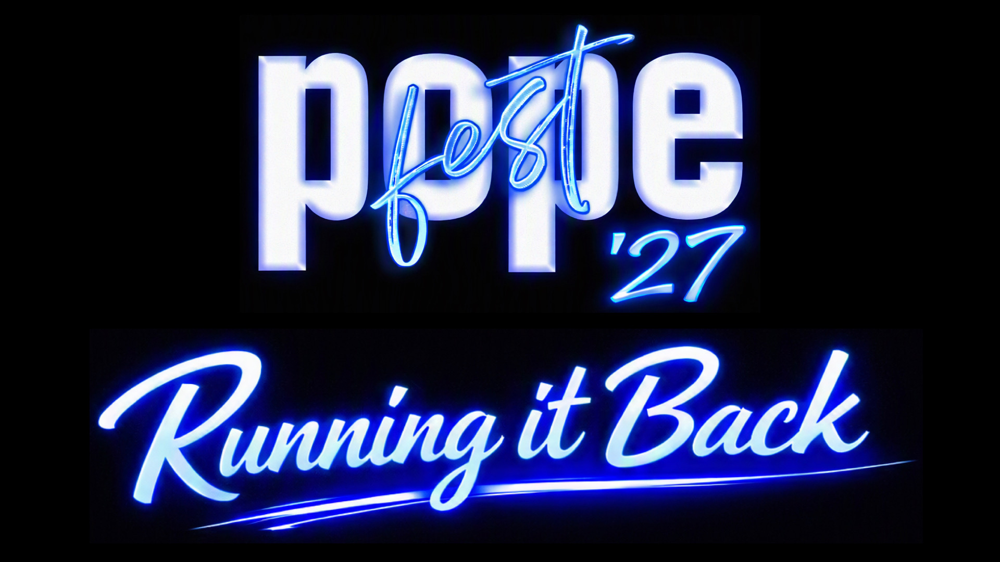
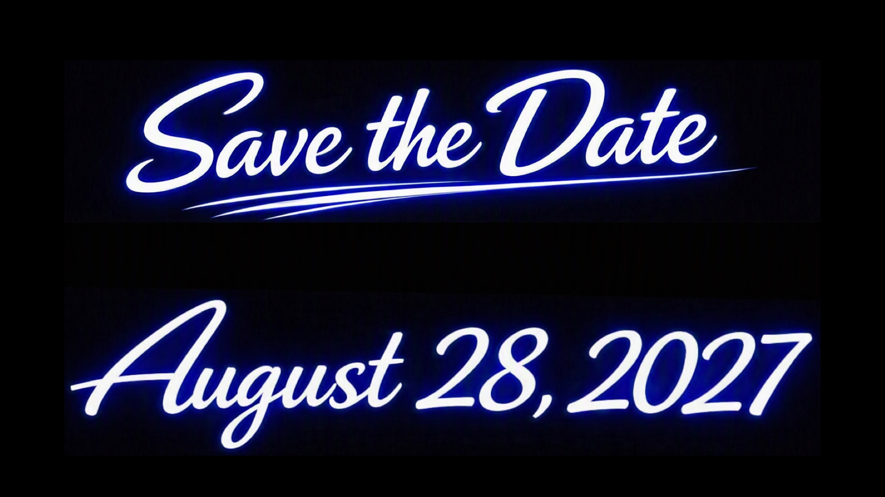

Interested in Becoming a Community Partner? Community partnership opportunities are available at multiple levels to support student programs and event operations. If you have any questions about sponsorship opportunities, please contact Lindsay.Barnette@cobbk12.org. To make a donation and become a Community Partner, click on the “Become a Community Partner Now” button.